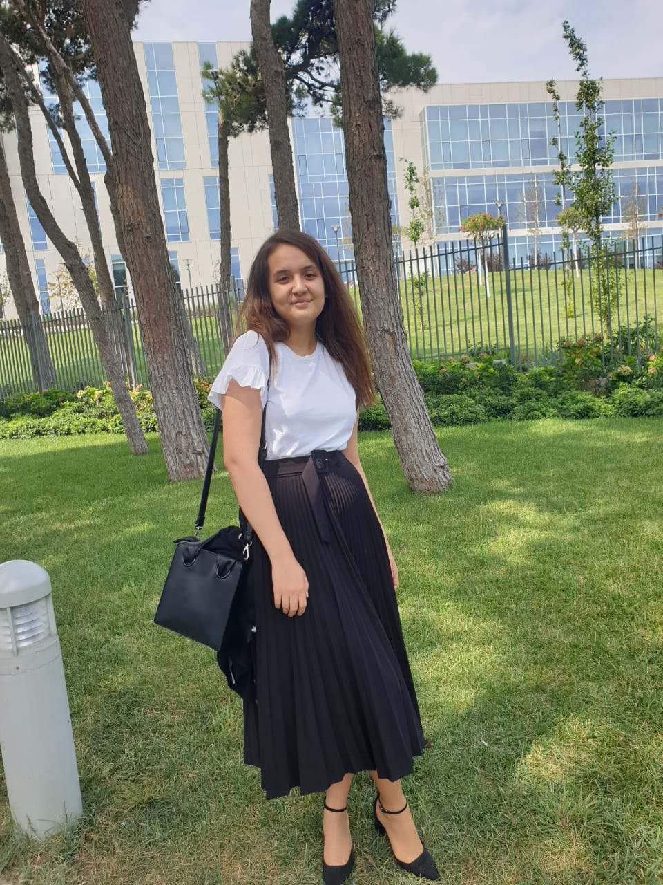

Haqqımızda
“Həyatdakı sərt zərbələri və fürsətləri ayırmaq çox vaxt çətindir.”
(Frederik Filips)
BİZ KİMİK?
Ümid edirik ki, saytımızı bəyəndiniz və sizi saytımızda yenidən
görmək çox istəyərdik. Saytımızın qurucuları ilə bağlı sizə məlumat
vermək istəyərdik. Saytımız 4 gənc tələbərin birgə işləyindən məlumat
mübadiləsindən, fikir və ideyalarından yaranmışdır. Saytın qurucuları
ilk öncə 3 mərhəli kursdan keçmiş və sonda istifadə etdiyimiz saytı yaratmışdılar.
Öncədəndə bəhs etdiyim ki saytın qurucusu 4 tələbədir və onlar haqqında məlumatı
sizlə bölüşmək bizim üçün sevindirici haldır.
Leyla Guliyeva

26 iyul 2002-ci ildə anadan olan Leyla Quliyeva bu saytın qurucularından biridir
və hal-hazırda ADA universitetində komputer elmləri üzrə təhsil alır. O öz qrup
yoldaşlarıyla fikir mübadiləsinə daxil olub nəticəsində bu saytın sevilən qurucusundan
biri olmuşdur. Saytımızda yerləşən Kod saatı hissəsinidə məhz O tərtib etmişdir.
Məktəb həyatına gəldikdə isə leyla 10-cu sinifə qədər 82 nömrəli məktəbi qırmızı
atestatla bitirmiş və Türkiyə Dəyanət vəqfi Bakı Türk liseyindən məzun olmuşdur.
Xüsusi diqqəti isə rəsmə aiddir və rəsm kursuna getmək üçün günləri sayır.
Detektiv kinoları və kitabları Leyla daha çox sevir. Sevdiyi məşğuliyyətlərdən
biri isə dekor hazırlamaqdır və əl işləri diqqətə layiqdir. Tort, mini kekslər,
onun hazırlamaqdan zövq aldığı şirniyyatlardır. Layihələrlə bağlı hissəyə gəldikdə
isə Leyla 2 layihədə iştirak etmişdir Birincisi Uk Government və BAKU İDEA LAB-ın
təşkilatçılığı ilə sosial biznes üzrə grand mükafatçısıdır və 1ci yerə layiq görülmüşdür.
Digər layihəsi isə Kovid-19 nəticəsində təxirə salınmışdır Bu layihə isə Arca Robotics
adlanır və Leyla bu layihədə vitse-prezident rolunda idi. Ümid edirik ki, Leyla layihələrini
həyata keçirdər və gələcəyin tanınmış mühəndislərindən olar.
Abdullah Kazımov

2003-cü il 25 martında anadan olan Abdullah Kazımov bu saytın qurucularından biridir
və hal-hazırda ADA universitetində informasiyan texnologiyaları üzrə təhsil alır.
Abdullah Sumqayıt 4 saylı tam orta məktəbdən məzun olmuşdur. Xüsusi marağı isə
proqramlaşdırma ilə bağlıdır. Onun hobbiləri isə futbol şahmat ilə bağlıdır Abdullah
C, C++, Java, JavaScript, Python kimi proqramlaşdırma dilləri ilə 5 ildirki məşğul olur.
O universitetə daxil olmadan öncə proqramlaşdırma ilə bağlı təməl hissələri öyrənmiş
və bu onun təhsilinə müsbət təsir göstərməkdə davam edir Saytın qurucusu olaraq Abdullah
qrup yoldaşları ilə çox yaxşı əməkdaşlıq yaratmışdır. Saytımızda yerləşən Robotics
hissəsinidə məhz O tərtib etmişdir. Məktəb illərində Respublika olimpiadasında 2 dəfə
bürünc medal qazanmışdır Ümid edirik ki, Abdullah gələcəyin tanınmış mühəndislərindən biri olar.
Elnarə Məmmədli

Elnarə 2002-ci il 18 yanvarda anadan olmuşdur Elnarə hal-hazırda ADA
universitetinin tələbəsidir və komputer elmləri üzrə təhsil alır. Elnarə
bu saytın qurulmasında fəal iştirak etmiş və əməkdaşları ilə birgə bu
saytı hazırlamışdırlar. O, 221 saylı tam orta məktəbin məzunu olmuşdur.
O, məktəb illərində müxtəlif kurslara getmiş və ingilis dili kursuna getməklə,
universitet həyatına müsbət təsir göstərmişdir. Elnarə, daha çox qorxu janrında
olan kitabları və filmləri izləməyi xoşlayır. Onun rəsmə qarşı xüsusi marağı
olmuşdur və rəsm kursuna yazılmışdır, lakin universitetə hazırlaşmaq səbəbi
ilə rəsm çəkməyə davam etməmişdir. Onun hobbilərinə isə tort və ya mini
kekslər hazırlamaq və bədii kitab oxumaqla bağlıdır. Məktəb həyatında məktəblər
üzrə olimpiadada birincilik ilə geri qayıtmışdır. Saytın “bizim kimik” hissəsinidə
məhz Elnarə tərtib etmişdir. Ümid edirik ki, Elnarə gələcəyin tanınmış mühəndislərindən biri olar.
Toğrul Məmmədli

Toğrul 2002-ci il yanvarın 23-ündə anadan olmuşdur. Toğrul hal-hazırda ADA
universitetində təhsil alır. Onun ixtisası komputer elmləridir. Toğrul saytın qurulması
üçün qrup yoldaşları ilə hər zaman ünsiyyətdə olub bu saytın qurulmasında fəal iştirak etmişdir.
Toğrul Sumqayıt şəhər 28 saylı tam orta məktəbindən məzun olmuşdur. Xüsusi maraqları
isə üzgüçülük qaydasız döyüş və gitar çalmaqdır. O bu maraqlarını daha peşakar etmək üçün
kurslara yazılmışdır. Toğrul Üzgüçülük və qaydasız döyüş ilə 10 ildir ki məşğul olur. Öz ixtisasına
uyğun olaraq O, proqramlaşdırma dili ilə bağlı kursa bu ildən yazılmışdır Saytda yerləşən “sayt haqqında”
hissənidə Toğrul hazırlamışdır Ümid edirik ki, Toğrul gələcəyin tanınmış mühəndislərindən biri olacaq.